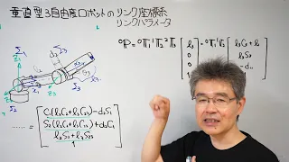

ロボティクス（大学院工学研究科・修士配当）
後期月曜日2コマ，ロボティクスの授業の補助資料（動画）のページです．
講義 第00回：10月2日, 2023
ロボティクス（イントロ）
講義 第01回：10月16日, 2023
1.1 平面2自由度ロボットの位置に関する運動学 その1
1.2 平面2自由度ロボットの位置に関する運動学 その２
1.3 垂直型３自由度ロボットの位置に関する運動学
講義 第02回：10月23日, 2023
2.1 姿勢記述のための回転行列
2.2 回転行列による座標変換
2.3 ロール・ピッチ・ヨー角
講義 第03回：10月30日, 2023
3.1 脚ロボットの軌道生成
3.1（続き）軌跡と軌道
3.2 関節空間での軌道計画（平面2自由度ロボット）
3.3 時間の多項式に基づく軌道生成
3.4 速度台形則に基づく軌道生成
講義 第04回：11月06日, 2023
4.1 運動学の一般的表現
4.2 リンクパラメータと同次変換行列
4.3a 垂直3自由度ロボットのリンク座標系
4.3b 垂直3自由度ロボットの運動学

講義 第05回：11月13日，2023
5 実践 位置制御と逆運動学（おうちロボットプロジェクト）